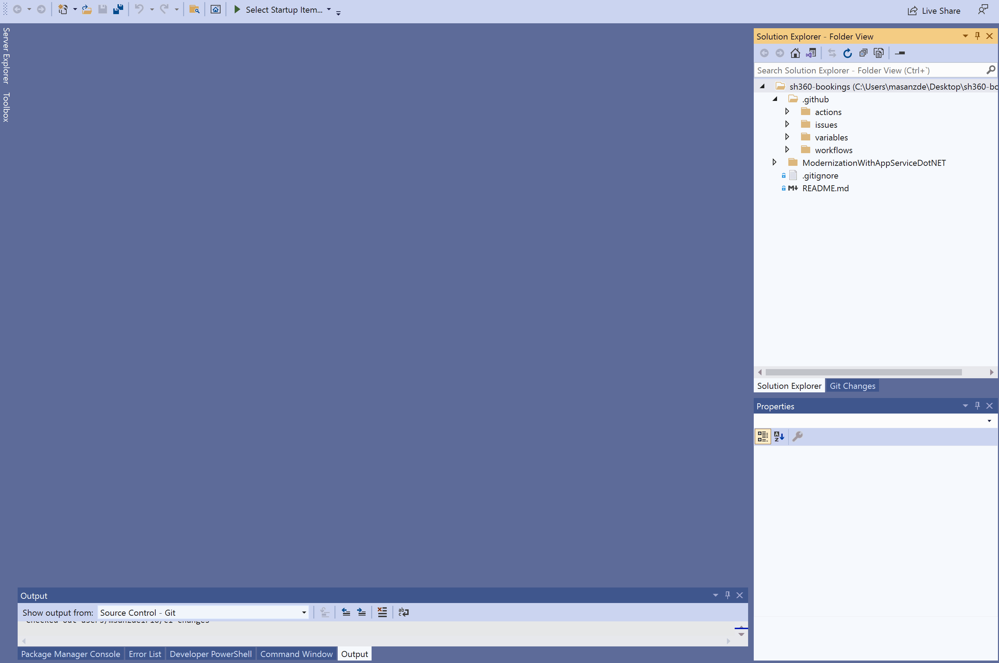

Home | Module 1 | Module 2 | Module 3 | Module 4 |
Module 2: Configure Build Pipeline
For Continuous Integration, the [Bookings-CI-Base] workflow is the build pipeline responsible for building the SH360 bookings app, running Unit Tests and publishing artifacts in the end to be consumed by the release pipeline [Bookings-CD-Base]. This module will provide an understanding of how the build CI pipeline is configured and various actions involved in the same.
Exercise 1: Understand and configure the build pipeline
To complete this exercise, you will configure a build pipeline using variables to run tests and create an artifact that can be deployed.
Prerequisites - Exercise 1
- CI Module 1 must be completed and the same branch created in module 1 is supposed to be used in this module.
- Codespaces beta has been subscribed to and enabled for user account. You can sign-up for the Beta version here.
Before starting, check that org-details variable group has the right values. Navigate to
.github > variables > org-details.jsonand verify the values are correct.All the workflows can be found under the folder
.github > workflows. Open the CI workflow file bookings-ci-base.yml.A workflow file, starts with defining its name, which in our case is Bookings-CI-Base. Next is the triggers section called on, this section is responsible for listing down all the different ways this workflow is triggered. We have defined 3 ways here:
Push: This trigger ensures that whenever a new update is pushed in particular branches this build workflow must run. We have specified just the main branch, thus only when the main branch has some updates pushed the build pipeline is expected to run.
Pull Request: This trigger ensures that whenever a PR is raised against a particular branch, the build pipeline is run as a verification run. We have specified just the main branch, thus only when a PR is raised against the main branch, the build pipeline is expected to run.
Workflow Dispatch: This option is used for manually triggering the workflow.
Uncomment the push and pull request section in the triggers, to let the workflow trigger automatically on a push or PR to the main branch.
Moving on, next section of a workflow is jobs. There can be n number of jobs inside a workflow, and each job can have n number of actions within it to perform various tasks. Each job runs on a particular agent and this is specified using the option runs-on. GitHub by default has GitHub hosted agents with various operating systems like windows, ubuntu, macos. You can also make use of self-hosted agents. In our case for the Bookings-CI-Base, we have just one job which utilizes the windows-latest agent.
Inside the jobs section, there are multiple actions defined under the steps section.
The first action Checkout Repository is responsible for cloning the code into the agent upon which actions will be performed. The next action, Microsoft Teams Deploy Card is responsible for posting workflow status onto the teams channel that we explained in the Continuous-Collaboration section. Remove the
if: ${{ false }}from this action to enable it. Similar to this action there are a lot of available actions in GitHub Marketplace which are open source and can be easily integrated into any workflow.Next actions Set Environment Variables - Organizational Details and Set Environment Variables - Booking All Stage are used to set variable groups that this workflow makes use of during the run. These variable groups are defined under the folder
.github > variables. Since GitHub currently doesn't have a concept of variable groups, we created this custom action to make use of variable groups in workflows.Next action Setup NuGet not specifying a particular version, we will be configuring the latest version available. After that we restore, update and build the bookings application in the following actions Nuget Restore, Nuget Update, Setup MSBuild and Build Solution.
Similar to how we ran the unit tests locally, we also configure the Run Unit Test action in pipeline to ensure that the application code doesn't break anything. Remove the
if: ${{ false }}from this action to enable it.The next 2 actions are responsible for publishing the build artifacts so that it can be consumed by the CD workflow.
The last action Trigger - Release to dev, is responsible for triggering the CD workflow to the dev environment after the CI build is successful. This triggers the CD workflow with the workflow-dispatch action. Replace the
${{ false }}withgithub.event_name != 'pull_request'to enable this action.
Thus we are successfully able to configure the build workflow. We will run this workflow in CI-Module 4.
Let's stage, commit and push the CI workflow changes onto the same branch that we created in Module 1. Refer CI-Module 1-Exercise 4 to follow the steps to push the workflow changes onto the local branch.
Key Takeaways
- GitHub workflows can be used to build and test the application on any agent, which is very important to ensure Continuous Integration capability of DevOps.
- GitHub Marketplace contains a variety of open source actions which can be easily integrated into workflows.